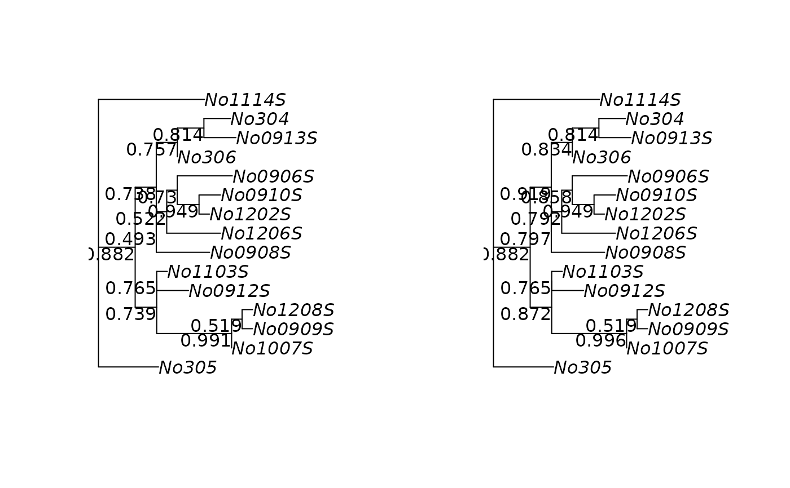

plotBS plots a phylogenetic tree with the bootstrap values assigned
to the (internal) edges. It can also used to assign bootstrap values to a
phylogenetic tree. add_support adds support values to a plot.
Usage
plotBS(tree, trees, type = "phylogram", method = "FBP", bs.col = "black",
bs.adj = NULL, digits = 3, p = 0, frame = "none", tol = 1e-06,
sep = "/", ...)
add_support(tree, trees, method = "FBP", tol = 1e-08, scale = TRUE,
frame = "none", digits = 3, sep = "/", ...)Arguments
- tree
The tree on which edges the bootstrap values are plotted.
- trees
a list of trees (object of class "multiPhylo").
- type
the type of tree to plot, one of "phylogram", "cladogram", "fan", "unrooted", "radial" or "none". If type is "none" the tree is returned with the bootstrap values assigned to the node labels.
- method
either "FBP" the classical bootstrap (default), "TBE" (transfer bootstrap) or "MCC" for assigning clade credibilities. In case of "MCC" all trees need to be rooted.
- bs.col
color of bootstrap support labels.
- bs.adj
one or two numeric values specifying the horizontal and vertical justification of the bootstrap labels.
- digits
integer indicating the number of decimal places.
- p
only plot support values higher than this percentage number (default is 0).
- frame
a character string specifying the kind of frame to be printed around the bootstrap values. This must be one of "none" (the default), "rect" or "circle".
- tol
a numeric value giving the tolerance to consider a branch length significantly greater than zero.
- sep
seperator between the different methods.
- ...
further parameters used by
plot.phylo.- scale
return ratio or percentage.
Value
plotBS returns silently a tree, i.e. an object of class
phylo with the bootstrap values as node labels. The argument
trees is optional and if not supplied the labels supplied
in the node.label slot will be used.
Details
The functions can either assign the classical Felsenstein’s bootstrap
proportions (FBP) (Felsenstein (1985), Hendy & Penny (1985)) or the
transfer bootstrap expectation (TBE) of Lemoine et al. (2018). Using the
option type=="n" just assigns the bootstrap values and return the tree
without plotting it.
References
Felsenstein J. (1985) Confidence limits on phylogenies. An approach using the bootstrap. Evolution 39, 783–791
Lemoine, F., Entfellner, J. B. D., Wilkinson, E., Correia, D., Felipe, M. D., De Oliveira, T., & Gascuel, O. (2018). Renewing Felsenstein’s phylogenetic bootstrap in the era of big data. Nature, 556(7702), 452–456.
Penny D. and Hendy M.D. (1985) Testing methods evolutionary tree construction. Cladistics 1, 266–278
Penny D. and Hendy M.D. (1986) Estimating the reliability of evolutionary trees. Molecular Biology and Evolution 3, 403–417
Author
Klaus Schliep klaus.schliep@gmail.com
Examples
fdir <- system.file("extdata/trees", package = "phangorn")
# RAxML best-known tree with bipartition support (from previous analysis)
raxml.tree <- read.tree(file.path(fdir,"RAxML_bipartitions.woodmouse"))
# RAxML bootstrap trees (from previous analysis)
raxml.bootstrap <- read.tree(file.path(fdir,"RAxML_bootstrap.woodmouse"))
par(mfrow=c(1,2))
plotBS(raxml.tree, raxml.bootstrap, "p")
plotBS(raxml.tree, raxml.bootstrap, "p", "TBE")
